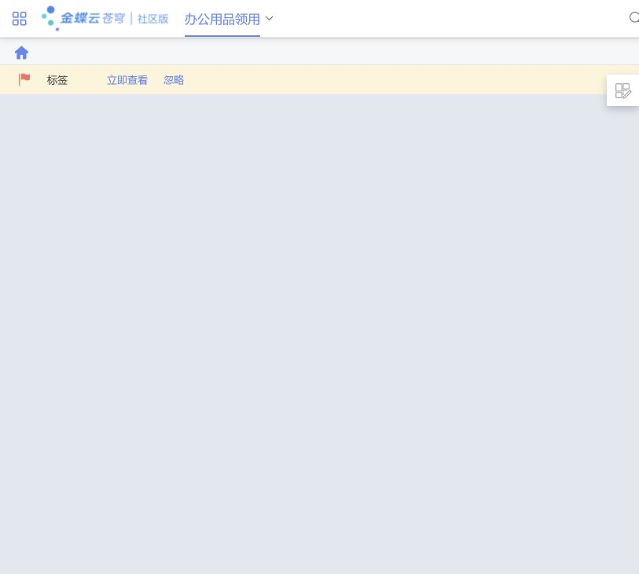
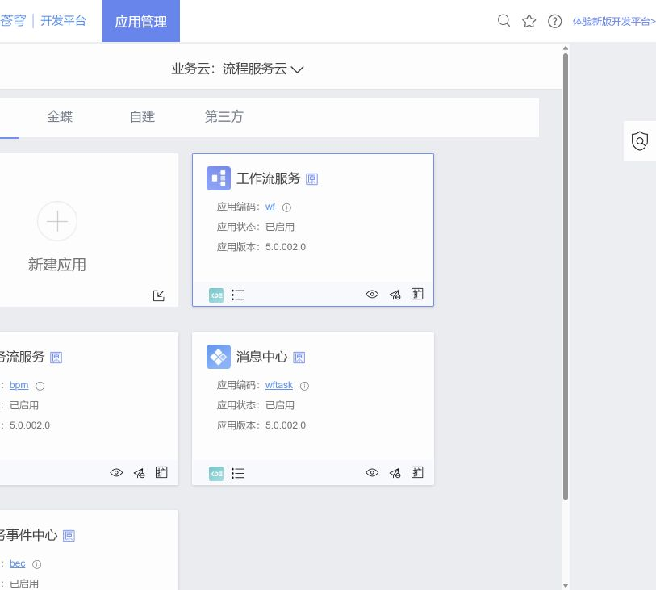
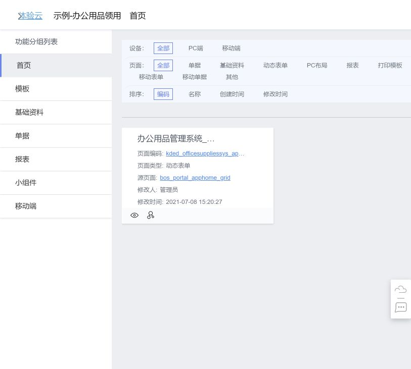

| 页面 | 整体 UI 模式 | 核心特点 | 结构性优点 |
|---|---|---|---|
| 办公用品领用工作台 | 可配置工作台 + 行动条 | 业务页签、行动入口、布局控制、内容画布 | 围绕单一业务上下文聚合处理与个性化入口 |
| 开发平台应用管理 | 卡片式对象管理 + 分面筛选 | 分类、对象卡片、状态版本、对象级动作 | 保持应用上下文并集中管理动作 |
| 页面资产管理 | 分面资产浏览器 + 分类导航 + 双视图 | 左侧分类、多维筛选、元数据卡片 | 从多个维度缩小资产范围并保留治理上下文 |
01 办公用品领用工作台
整体模式：可配置工作台（Configurable Workspace）+ 行动条（Action Strip）
原始图片

原图模式标注
全局导航模式
业务页签导航
行动条模式：标签 / 立即查看 / 忽略
布局控制
可配置内容画布（当前为空态）
模式特点
- 顶部保留全局产品导航，下一层锁定当前业务页签。
- 行动条提供查看、忽略等即时分流动作。
- 内容画布与布局控制分离，具备个性化工作区结构。
这种模式的优点
- 业务主题与处理动作位于同一上下文。
- 行动入口前置，减少在多级菜单中寻找当前事项。
- 布局控制允许工作区适应不同使用者，但实际效果尚未测试。
| 标注区域 | 中文模式名称 | 作用 |
|---|---|---|
| 顶部 | 全局导航模式 | 跨产品与跨模块定位 |
| 业务名称 | 业务页签导航 | 保持当前业务上下文 |
| 标签行 | 行动条模式 | 提供查看、忽略等快速处理 |
| 主体 | 可配置内容画布 | 承载组件和个性化布局；当前截图为空态 |
02 开发平台应用管理
整体模式：卡片式对象管理（Card-based Object Management）+ 分面筛选（Faceted Filter）
原始图片

原图模式标注
全局导航 + 当前模块页签
上下文选择器：业务云
分面筛选：全部 / 金蝶 / 自建 / 第三方
创建入口卡片
对象卡片模式
对象级快捷操作
重复对象卡片
模式特点
- 先选业务云，再按来源分面筛选应用集合。
- 每张卡片聚合名称、编码、状态、版本和动作。
- 新建应用使用独立入口卡片，与已有对象并列。
这种模式的优点
- 对象身份和生命周期信息同屏，便于快速比较。
- 管理动作保留在应用上下文内，减少对象切换。
- 分面筛选可逐步缩小候选范围；大规模效率尚未验证。
| 标注区域 | 中文模式名称 | 作用 |
|---|---|---|
| 业务云栏 | 上下文选择器 | 先确定资产所属范围 |
| 来源页签 | 分面筛选模式 | 按来源缩小应用集合 |
| 新建应用 | 创建入口卡片 | 把新增动作放入对象集合入口 |
| 应用块 | 对象卡片模式 | 聚合身份、状态、版本和操作 |
| 卡片底部 | 对象级快捷操作 | 在当前对象上下文执行管理动作 |
03 示例应用页面资产管理
整体模式：分面资产浏览器 + 分类导航 + 卡片/列表双视图
原始图片

原图模式标注
面包屑导航模式
分类导航模式
分面筛选 + 排序模式
资产卡片模式
治理元数据 + 对象操作
模式特点
- 左侧用业务资产类型进行稳定分类导航。
- 顶部按设备、页面类型和排序条件进行分面过滤。
- 主体卡片展示编码、类型、源页面、修改人和修改时间。
这种模式的优点
- 分类与分面组合，适合异构页面资产集合。
- 卡片保留较完整对象上下文，列表视图可提供更高密度。
- 来源与修改信息支持资产识别和变更追踪。
| 标注区域 | 中文模式名称 | 作用 |
|---|---|---|
| 顶部路径 | 面包屑导航模式 | 显示应用与当前页面层级 |
| 左侧栏 | 分类导航模式 | 按资产类型建立稳定入口 |
| 筛选区 | 分面筛选 + 排序模式 | 按终端、类型和顺序缩小范围 |
| 主体 | 资产卡片模式 | 展示页面身份和治理上下文 |
| 卡片信息 | 治理元数据模式 | 追溯来源、修改人和修改时间 |
证据边界：模式名称和特点来自截图中可见结构；“优点”表示该模式的结构性价值，不代表已经通过日志或用户测试证明效率提升。当前未覆盖设计器、最终运行态、异常态和权限差异，因此不输出改版优先级。